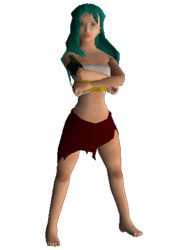
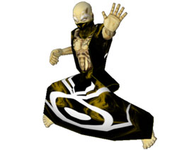

8 |
I Campioni |
 |
I Campioni Nome: Jen Comu Caratteristiche: Tuttavia, Jen credeva che i draghi dovessero essere lasciati liberi di governare Nakiha. Così, appena lasciato il Tempio del Drago in cerca del Drago Signore dell'Acqua, lei si spogliò della tonaca e si travestì da mendicante per eludere il suo ruolo di campione di Serengania. Ora, come sacerdotessa libera da vincoli, può seguire il suo obiettivo: raccogliere tutti i Tomi per liberare i draghi!
Nome: Elziath Caratteristiche: 300 anni fa Elziath fu il primo tra tanti utenti della magia che esiliò i draghi nella grande distesa di ghiaccio. Temendo che i Signori Draghi distruggessero oppure rendessero il genere umano servo di un potere diabolico, Andera resuscitò questo antico eroe per portare il Tomo dell' Osso e bandire i Signori Draghi e la loro discendenza e farli ritornare elementi originari da cui erano stati creati. Anche se anziano, Elziath vive con la Magia Terra. La sua abilità e conoscenza sono senza pari, solo le ambizioni degli altri campioni potrebbero batterlo. Lui è in possesso del Tomo dell' Osso ed è a conoscenza del segreto della Magia Terra, Elziath ora cerca il Tomo della Scaglia, dell' Artiglio e del Fuoco.Così i Signori Draghi torneranno ad essere gli elementi da cui scaturirono, e lui potrà riposare in pace. Nome: Muru Moko Caratteristiche: Muru Moko fu consumato dal desiderio di potere. Programmò di liberare i draghi e proclamarsi "Signore del Drago", sovrano dei draghi e imperatore di Serengania. Nella disperazione di raggiungere il suo obiettivo, viaggiò fino Arkhonair e convinse il regno di lasciargli usare il Tomo dell'Artiglio per liberare i draghi. Una volta che i Signori Draghi furono liberi, Muru Moko rubò il Tomo dell'Artiglio. Ora difende la sua causa: riunire i Tomi del Drago, reclamare il dominio su tutta la razza dei draghi e proclamarsi "Signore dei Draghi " e Imperatore di Serengania.
Nome: Vourak Caratteristiche: Vourak, Signore Demonio di un antico ordine di cavalieri, fu convocato per difendere la causa di Daroviar. Prelevato dal regno di Vragalis, Signore della Distruzione, Vouraks è guidato nelle sue azioni dall'amore per il fuoco e la distruzione. Se Vourak riuscisse ad unire i tomi del Drago, schiavizzerebbe i draghi per usarli nel bruciare, distruggere e porre in rovina ogni cosa, perseguendo il credo di Ra Ra Avis che solo il più forte sopravvive. |


 |
 |
 |